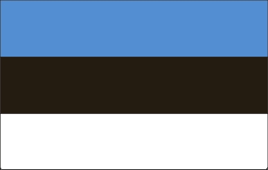

About Sri Lanka

Sri Lanka is the wonderland of south Asia. Beautiful beaches, rain forest, rich ancient architecture and archeologically renowned cities have been main attractions. The tropical paradise for diverse plants, distinct wild animals. Land like no other "pearl of Indian Ocean" [Futher Info].
Tourist Places
There are few places people always love to visit. Those are
- Nine Arch Bridge
- Mihintale
- Unawatuna
- Gal Viharaya
- Kataragama Festival
- Udawalawe National Park
- Ravana Falls
- Dambulla Cave Temple
- Mirissa
- Adam's Peak
- Yala National Park
- Sigiriya Rock Fort
About Estonia
Estonia, officially the Republic of Estonia, is a country in Northern Europe.
It covers an area of 45,228 square km.
Tallinn is its capital and largest city in Estonia.
More detailed info is in the link below, on the Wikipedia page.
>here< Link to Wikipedia page about EstoniaAbout India
Info about Best Cities

If there is one place on the face of earth where all the dreams of living men have found a home from the very earliest days when man began the dream of existence, it is India!
India conquered and dominated China culturally for 20 centuries without ever having to send a single soldier across her border.
If I were asked under what sky the human mind has most fully developed some of its choicest gifts, has most deeply pondered on the greatest problems of life, and has found solutions, I should point to India.
India is the cradle of the human race, the birthplace of human speech, the mother of history, the grandmother of legend, and the great grand mother of tradition. Our most valuable and most artistic materials in the history of man are treasured up in India only!
Click on here for More Info about India